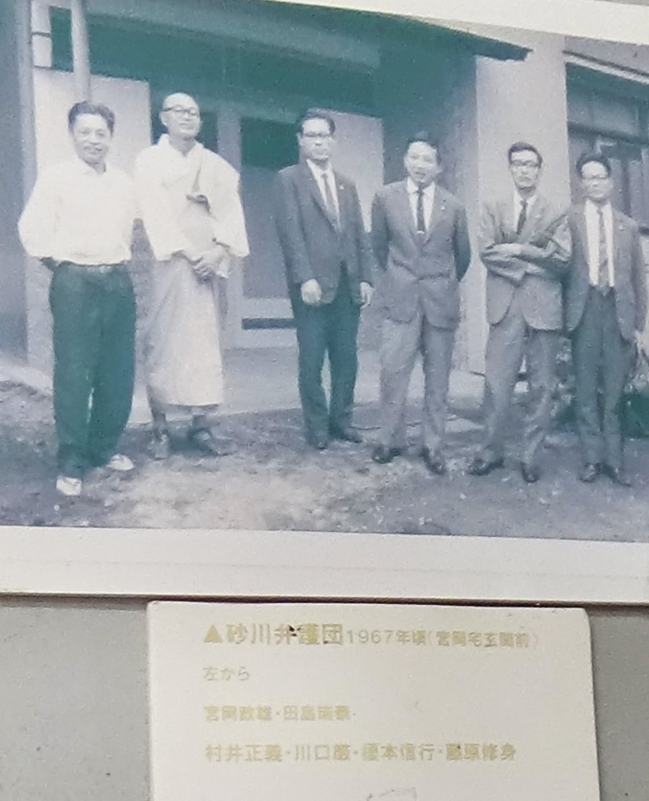

新井章弁護士 インタビュー（2020年10月）
裁判闘争としての「砂川闘争」
最後まで残った弁護士の一人、新井章は1931年生まれ。弁護士資格を得て法律事務所に就職したばかりの1956年に、砂川に入った。仲井富の仲介により2020年10月に、九十歳を目前にして現役の新井弁護士を訪ねることができた。そして、当初の事情から砂川裁判闘争の経緯や意味について、まずは記憶の赴くまま自由に語ってもらった。
そこで話された中心部分を、以下、テーマごとに小見出しをつけて再構成する。個人記憶の語りの生き生きとした口調や話の流れを忠実に再現するため、できるだけ発話そのままの文字化を心がけたが、それを新井弁護士本人が読んで、より正確な文章に書き改めたものである。必要に応じて、筆者による加筆も〔 〕内に示した
「新井章弁護士インタビュー全記録」音声データは、砂川平和ひろばに所蔵されている。
一年生弁護士として闘争2年目の砂川へ
私が法律事務所に入って間もなく ボスから
砂川の現地へ行って 地元の反対同盟の人たちから話を聞いて
勉強してくるように 言われたんです。
砂川（立川）は東京のはずれにあるので
六法全書を持って電車の中で読んでいけ というような
今から考えるとずいぶん非教育的な 乱暴極まることを
平気で命じるのが 当時のやり方でしたね。
そういうわけで 私と砂川との最初の接触が始まったんです。
そのとき既に 事務所の何人かの先輩たちが 裁判所に対して
内閣総理大臣を被告にした行政訴訟を 起こしていました。
一つは その当時
「米軍のための土地収用特別措置法」とでもいうべき特別な法律があったので
その法律で政府方に噛みつくというか 内閣総理大臣側の基地拡張計画に
憲法上の問題点やその他の問題点がいっぱいあるはずだから
それを 片方で六法全書を読みながら
また片方で地元の人の実情を聞かせてもらいながら
なんとか仕事を始めろ と言われているときに
一、二年先輩のその人たちが 裁判所に訴訟を起こしてたのです。
「土地収用法」という法律では
「土地収用認定」という行政処分が 非常に大事な位置づけを与えられていて
砂川の農民の土地をとりあげるための いわば“許可”を与える手続が
内閣総理大臣の「収用認定」なんですが
その収用認定の取消しを裁判所に求める という裁判が まず一つ。
それから多分 ２、３ヶ月遅れてだと思うんですが
二番手としては 砂川の農民たちが「原告」となって その時の政府に対して
既にとりあげられて基地のなかにとりこまれている土地を 返せという
土地返還請求訴訟というのが 始められていたんです。
3年目の砂川刑事裁判事件
さらに三番目が 昭和32〔1957〕年なんですけど
その7月に 内閣総理大臣の収用認定をめぐって
地元の人や応援の労働者たち さらには市民団体の人たちが
土地とりあげをやめろと
内閣をもって総理大臣は収用認定を自ら取り消せ
という要求を 大きな声で現地の集会で叫ぶ という大衆運動を
昭和32年には 元気よくやれるようになっていたのですが
そのときに 言ってみれば元気あまって
米軍基地の金網＝フェンスに 寄りかかったり蹴飛ばしたりしてるうちに
フェンスが倒れて 基地の中にするりと入れるような状態になった。
そこで この土地はもともと農民たちの土地であって
戦後米軍が不法に実力で取り上げたんだから
といって威勢をあげて 三、四百名まとまって
その基地のフェンスの破れ目から 中に入っていったんですね。
実はそのとき私も入ってたんです 今だから言いますけども。
基地の中に立ち入った数百名の人たちの行動を
当時の米軍や日本政府がとらえて
あれは基地に対する「住居侵入」だということで 検察庁や警察を動員して
主だったというか 彼らがねらっていた指導部の人たち
坂田茂さんとか土屋源太郎さんとか
七名ほどの 我々デモ隊のなかの“侍大将”を逮捕して
その年の秋ぐらいに 刑事裁判手続を彼らの方が、政府側が始めたんですね。
そういうわけで 結局〔砂川闘争1年目の〕昭和30年からは 我々の側が「原告」で
裁判を起こして、政府や内閣総理大臣を被告にして
収用認定を取り消せとか 土地を返還しろとかやってたのに対して
3年目からは権力が それに対する ‟しっぺ返し“というか 巻き返しというか
対抗措置として 刑事弾圧をもくろんだんですね。
基地の中に入った方が悪いっていえば悪いのですけれど
下世話な表現で言えば、そこでいわば‟揚げ足をとられた“っていうか
ケチをつけるタネを 政府・警察庁側にあるいは米軍側に与えた というのが
その後 世間で大きく言われた「砂川刑事特別法違反被告事件」という
刑事裁判事件の始まりなんです。
基地の中に入ったのは「住居侵入」だという
当局側の巻き返しの刑事手続きについて 1年経ち 2年経ち といううちに
まずは最初の裁判所である東京地方裁判所で
伊達秋雄という裁判長のいた裁判部が
この起訴は許されないということで なぜ許されないかといえば
日米安保条約は 日本国憲法の基本的な趣旨に照らして疑問がある
憲法上の疑義がある
それに基づいて デモ隊の代表者たちを処罰しようとすることは許されない
ということで 日米安保条約には違憲の問題があるので
それを根拠にした刑事裁判の提起は 違法であり許されない と
したがって「無罪」だという 非常にありがたい判決を
昭和34〔1959〕年の3月に 出してくれたんですね。
しかし その裁判については
権力側は 今もそうですが――敵もさるもので――
伊達判決＝違憲無罪判決を一日も早く上訴の手続で取り消してしまえ
ということを 当時の政府・官憲側は考え それにまつわって
裁判所の表舞台に現れない裁判手続の裏側で
あれこれ画策したことが 今では明らかとなっています。
この点に関しては、アメリカの大使館が 当時の政府や検察庁
さらには最高裁にまで 働きかけをして
一日も早く伊達判決を取り消せ っていう圧力をかけ その結果
最高裁がその年の12月には伊達判決を破棄して
取り消してしまっているんですね。
そういう非常に速い運びを
米国・政府側が当時の検察庁や裁判所側に働きかけて
成し遂げたということがあって その働きかけのプロセスに
当時の最高裁長官だった田中耕太郎が 密接にかんでいた
当時の大使館の公使らと 密かに会食などを重ねて
どうやって いつごろ 伊達判決を取り消させるか 協議していた
ということが明らかになっております。
いずれにしても 砂川の闘争が始まって３年目くらいには
砂川基地拡張反対闘争とその拡がりの問題は
かなり世間にも知られるようになり
日本だけじゃなくて アメリカに対しても 大変な衝撃を与えるできごとが
どんどん砂川の現地から発信されるようになっていったことは確かです。
その後の裁判継続と「勝利」後の反省
しかし 刑事裁判は 最初に東京地裁の違憲判決があり
やがてそれがひっくり返されて 審理やり直しの差戻し審であるために
ああいう基地のなかに 塀を壊して入るなどけしからん
という判断が あらためて言い渡されることになったのですけれど
それで 刑事手続としてはすべて終わってしまったわけでして
それから先 砂川では闘う材料がなくなったのかというと
それはとんでもない話でありまして もともと米軍側は
あそこの土地を飛行場として拡張して もっと大規模に使いたいという
基本的な願望をもっていたわけですから
その願望に水をかけ それを押し止めるという手続が執られなければなりません。
刑事裁判がどうなろうと 行政法的には どうしても
それが 宿題として残ってしまうわけですね。
そこで その内閣総理大臣の収用認定を取り消せ という判決がほしいと
行政訴訟で そういう判決を出させるための闘いを
それから４年目、５年目、６年目というように
それ以後の時間をかけて 何名かの若手の弁護士が
地元の反対同盟の依頼を受けて 裁判闘争として
頑張り続けるということになったわけです。
そうやっているうちに 何年でしたかな 最後は 1969年になって
当時の内閣総理大臣や自民党政権が 砂川の収用認定はやめたと
砂川の滑走路を拡張して基地を広げるという計画は取りやめた ということに
幸いなったんですね 69年だったかと思う。
69年段階で 当時の米軍と結託していた自民党政権の側が ギブアップしたんです。
そういう段取りを経て砂川の基地拡張反対闘争は 勝利のうちに終わったんです。
僕はその当時もそうだし
最近まで砂川の裁判は勝ったんじゃないかって言われたけれど
勝ったという認識は あんまりなかったんです。
あんまり日々がしんどかったもんだからね。
勝ったって言われてもピンとこなかったけど しかし いずれにしても
立川基地を拡張して あそこに米軍の輸送能力をいっぱい持った飛行機を
発着させるという計画は もうその後 今日に至るまで ないわけですね。
米軍立川計画というのは 幸いにも解消したわけです。
しかし、万々歳か それで我々は喜んでばかりいていいかというと
そりゃあ 全くそうじゃなくて 皆さんがご承知のとおり 敵もさるもので
あにはからんや 隣の横田に作っていた
いわば第二の予備的な基地を拡充して
それまで立川基地に期待していた米軍飛行場の能力を
横田の方に吸収させるということをやって それが今日に至っているわけですね。
横田の「静かな夜を返せ」という要求
米軍の飛行機で眠らせないのはけしからんという 人権含みの問題提起は
横田で闘った人たちは ずっとその後もするようになったんですけどね。
今になってふり返ると、私なんかのひとつの 大きな反省は
立川で勝って喜んでたっていうだけで 横田の方に
それこそ 米軍や基地公害が“横滑り”するということの意味や 重大性を
あまり認識しないで――ま、簡単に言えば――闘わなかったんですね。
横田の地元の人たちの闘いに いわば「任せていた」ということです。
それが 現在までの やっぱり横田の住民が
いろんな意味で苦しみを続けていることの原因
源〔みなもと〕になっていると思うんですけれども。
東京都収用委員会での審理引き延ばし
こうして刑事裁判が終わって
その土地を取り上げられたくないという収用認定反対の闘いは
その後10年あまりの間では 闘いの場所は 裁判所だけじゃなくて
東京都収用委員会という 行政委員会の場にも 闘いの火が広がった
というか 我々が広げたことになるんですけど
裁判所の方は、刑事裁判で最高裁で彼らが勝ちましたから
収用認定に憲法上の問題はない ということで終わりそうな顔をして
東京地裁や高裁などの担当裁判所は 何もしてくれなかったのです。
ところが 東京都収用委員会の方は 憲法問題はとり上げないのですが
あの砂川の土地をほんとに広げさせていいのかどうかという
行政委員会の立場で 審理を始めたんですね。
その法律的な根拠は 「土地収用法」という
今も『六法全書』の中に収められている法律の いわば兄弟分として
「米軍用地のための土地収用法」というのがあるんですよ。
その米軍用の土地のための必要性に基づく土地収用が 許されるかどうか
という特別収用手続をめぐって 我々地元の反対同盟や弁護団が
10年あまりのなかの大半の時間を使って 収用委員会の審理の場で頑張った。
そこで出てきたのが 相手側は当時の自民党政府の弁護団
我々の方は 相変わらずの私どもを中心とした弁護団で
淡々と あの砂川の土地は 強制収用になじむかどうか
という行政法的観点からだけ 審理を進めることになったわけです。
しかし 収用委員会は最終的には
委員会に「収用裁決」を求める申立人 政府側の請求を
認めるか 却下するかの結論を下さなければならない立場にあるので
我々農民側としては何としても
「収用裁決」だけはさせないように 万策を講ずる必要があり そのために
我々弁護団は あの手この手で審理の引き延ばしを図ることになったわけです。
我々弁護団は、収用委員会の審理がひと月にいっぺんくらいのわりで開かれる度に
出て行って 今日は「電話帳」を読みますから 委員の先生がまんして聞いて下さい
などと言って NTTの電話帳を読み始めるとかね
あらゆる時間稼ぎをやったわけです。
革新都政下の思わぬ展開
非常に見通しの暗い いつごろまでこれをやってたらラチがあくんだろうかという
これも端的にいえば“絶望的な”闘いに 取り組んでいたんですけど
幸いなことに 何年か粘ってるうちに 日本の政治情勢がだいぶ変わってきまして
社会党とか共産党の努力が だんだん 大勢の市民大衆に浸透して
革新が保守を選挙で打ち破るという 嬉しい情勢が広がった時期があるんですね。
「革新都政」「革新市政」の時代というのが 確かにあって
10年近い間 東京都収用委員会で 絶望的な闘いを 我々が続けてる間に
東京都の知事が美濃部亮吉さんという革新知事に変わってしまったものだから
結局 そのうちに 美濃部都知事は あまりこの手続には熱心でないようですから
しばらく新井さんたち 審理の手続は休みにしておきましょう なんていう
ひじょうに嬉しい報せが 収用委員会の側から
告げられてくるようになったわけです。
そんなことも織り込みながら 最終的には 業を煮やしたのは米軍の側であって
こんな東京都の収用委員会手続の状態では
いつ よろしいという決定をもらえるのかも判らないからといって
計画を中止し これに従って当時の日本の保守党政府の側も
撤退の意向を 表明してくれたんですね。
そんなことがありまして 結局 砂川の土地とりあげ反対の闘いは
本当に 今になっても驚くけれども
我々 農民の側 反対同盟の側
反対同盟を応援した全国の支援労働者や市民の側が
勝ったんですよ。
最後まで共に闘いぬいた人々
ただ、私が最後に申し上げましたとおり とんでもない課題は
横田の問題であって それは今も問題として残ってるわけですね。
なんとかいう物騒なヘリコプターを飛ばしているとか
米軍はいろんなことをやってるわけで
まだ闘いは 手綱を緩めないで 続けていかないとならないわけです。
で その間 我々弁護士は 十名前後は 常任的というか
常に必ずかけつける弁護士が いたのですが
我々は 原告である 農民の人たちの いわば代理人として
裁判所の法廷に立ったり 収用委員会の審理の場に立っていたわけで
手続は「本人」というのが いるわけですね。
裁判を起こすとか 審査請求を行うというときには
誰が原告になるか 「本人」というのがまずいるわけで
本人があって 弁護士とか 代理人がその傍らにいる
という位置づけなわけなのですが その本人というのは
言うまでもなく 福島さんのお父さんである宮岡さんをはじめとして
最初は百名近い地元農民だったわけです。
しかし闘いが続くうちに やめていく人 脱落する人などが出て
あくまでも反対を続ける「砂川土地収用反対同盟」は
三十名足らずの原告だけになったのですが そのなかに
宮岡さんがおられ 青木市五郎さんがおられ
偉いことに当時町長をしておられた宮崎伝左衛門という方がおられたり
その宮崎町長をシンボルにして その傍らで宮崎さんを支え 励まし
闘い続けさせるという「行動隊」として
青木市五郎さんという農民の方が 基地反対同盟行動隊長を
そして宮岡さんが行動隊の副隊長を 務めておられたわけです。
宮岡政雄という人物と「代理人」としての誇り
宮岡さんは 別にどこかの大学で法律の勉強したとか
という経歴の方ではなかったわけですよね。
ほんとにもう 典型的な農民として育ち 社会人として伸びてこられた方なんで
そういう人がですね 確かある段階から
「新井さん、俺もね六法全書っての買ってみたよ」といってね
土地収用法とか 憲法ってのを 勉強始めたっていうわけでして
僕も ビックリしてね いやぁ 偉い人はやっぱりいるもんだなぁ と思ったの。
で さっきから何べんもお話が出てますように
派手な刑事裁判闘争が終った後の十何年間ていうのは
もっぱらその行政手続に いかにくらいついて頑張っていくかですから
そんな中で中心的な原告グループの そのまた心棒として 宮岡さんが
自らも法律を勉強して 弁護士とも打ち合わせしながら
弁護団会議にも出席しながら 法廷闘争・裁判闘争を
頑張り続けて下さったということになるわけですね。
私は人間的にも宮岡さんて人を好きだったんで
決して偉ぶらないし 地味な人ですし 約束したことはきちっと守って
事務的・実務的な問題でも守って 具体的な問題を持ちよってくれる人だった。
宮岡さんがこの『砂川闘争の記録』の中でも 弁護団の新井ってのは
あんまり普段ものを言わないけれども おとなしく地味に行動していたけれども
重要な段階で重要な発言をしてくれたって言って ほめて下さってね 。
私は 死んでもこれだけは 誇りにしようと思っているけれど
闘った本人の方たちから弁護士・代理人がほめられるというのは
代理人としては これほど嬉しいことはないですね。
『砂川闘争の記録』の中では その点が 忘れられないですね。
{kind=link}
